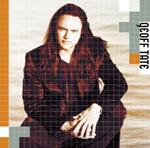

Home Artist links Label link

Geoff Tate - Geoff Tate
| Artist: | Geoff Tate |
| Title: | Geoff Tate |
| Label: | .... |
| Length(s): | 50 minutes |
| Year(s) of release: | 2002 |
| Month of review: | [09/2002] |
Sample this album in MP3 or RealAudio
The music
Of course, most of you will know Geoff Tate from his work with Queensryche.
The band still exists, but like James LaBrie he wanted to do an album by
himself and this is the result. In eleven songs Geoff Tate more or less
does what is expected of him: more, because the songs are really songs, not
epics, the focus is on songwriting and performing, not on bravoura or flashiness.
Less, because Tate introduces a number of elements not known to Queensryche
at all: many of the songs are rather noisy and full. The latter is also
a drawback, because together these songs are a drain in your energy. Tate
can be both loud and sweet in these songs, but always letting the melody reign.
However, his performance is at times a bit too rough and overly busy
(as in for instance A Passenger, Off The TV and Grain Of Faith). Untypical ingredient
in the songs are New Age and Flamenco in the third track, the rootsy organ of Forever,
the urgent artrock feel of Of Off The TV, the Black Crowes
style jamrock of Grain Of Faith, the Brave (of Marillion) style opening of
Every Move We Make with its melodramatic continuation and the crooning of
This Moment. Best song in my book
is In Other Words opening with sad vocals and piano. Very somber stuff with a
perfect building of tension in the middle part including violin. Great depressing
pop, that. All in all, a respectable album, where my main problem is that the
songs leave too little room to breathe. This would also have helped in forming
a stronger identity across the album. However, in the melodic department and
overall variation, Tate does score higher than I expected.
© Jurriaan Hage